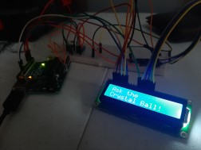
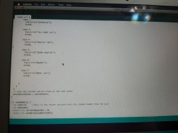

Arduino 8 -Ball
Learned how to connect a liquid crystal display to a breadboard with a potentiometer and button.
Some very simple coding with the liquid crystal library included, made some funny responses and added a randomhat function

Ultrasonic Theramin
This was a fun one, setting up my Raspberry Pi with an ultrasonic sensor, including Sonic Pi to make a theramin. Below is a video about how a candle interacts with the Ultrasonic Sensor. (I apologize for the language, my roomate and I were having too much fun)